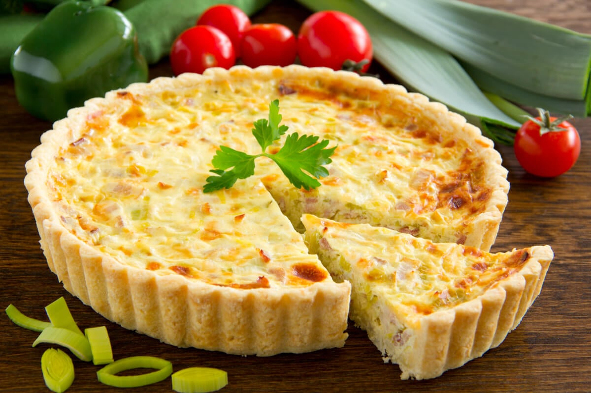
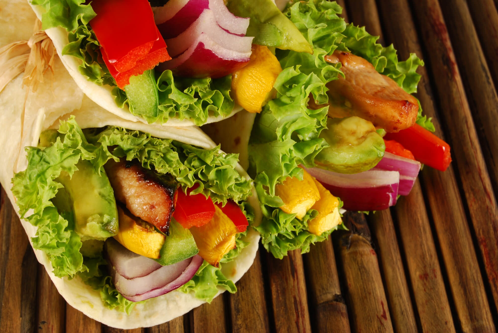

- bolos
- tortas doces
- mousses
- brigadeiro
- pave
- pudim
modo de preparo
- coxinha
- bolinho de queijo
- esfira
- torta
- pizza
- bolinho de queijo
modo de preparo

- massa de panqueca
- pão caseiro
- lasanha
- macarrão a carbonara
- empada
- rosquinha
modo de preparo

- iorgurte
- cappuccino
- chocolate quente
- vitaminas
- pink lemonade
- mikshake
modo de preparo
- crepioca fit
- panqueca de aveia com banana
- torta de frango fit
- tapioca com queijo e ovo
- crepioca de queijo com tomate
- empadão fit

modo de preparo